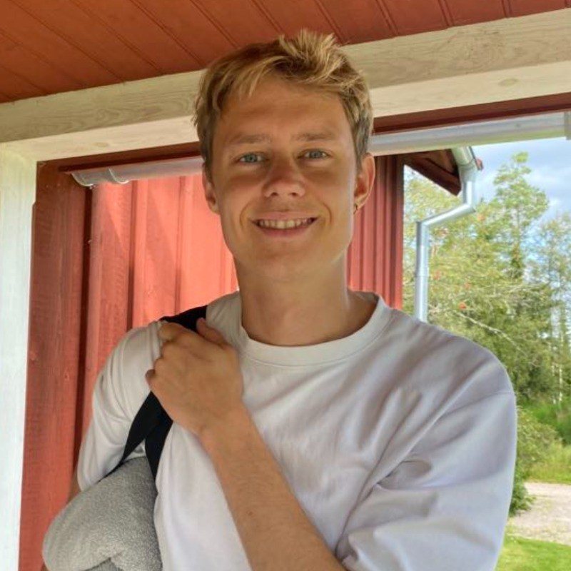
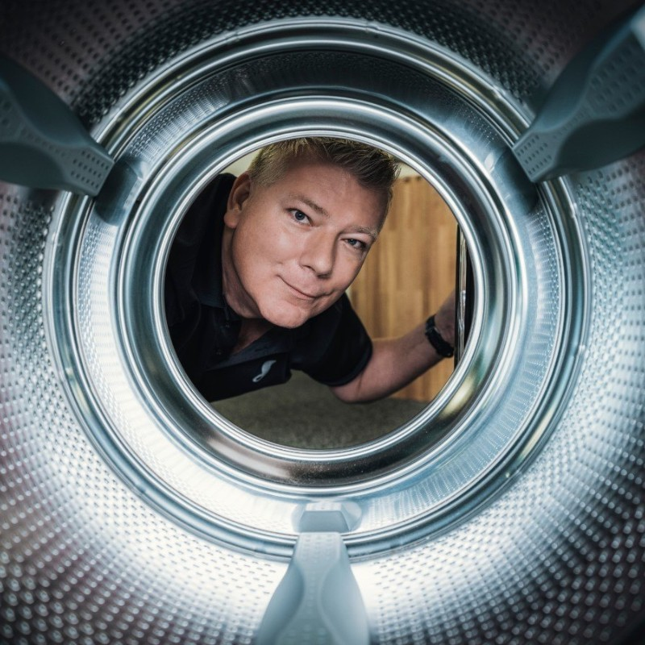

Hej, mit navn erHi, my name is
Jeg er datamatikerstuderende med fokus på fullstack-udvikling i Java, JavaScript og Python. Har desuden erfaring med databaser, AI-agenter og automatisering. Søger 10-ugers praktik fra september 2026. I'm a computer science student focused on fullstack development in Java, JavaScript and Python. I also have experience with databases, AI agents and automation. Looking for a 10-week internship starting September 2026.
Jeg er en målrettet datamatikerstuderende på Erhvervsakademi København, aktuelt på 4. semester med et karaktergennemsnit på 9,6. Jeg arbejder med fullstack-udvikling og har erfaring med alt fra databasedesign og Docker til AI-agenter og automatisering med n8n. I'm a driven computer science student at Erhvervsakademi København (Copenhagen Business Academy), currently in my 4th semester with a 9.6 GPA. I work with fullstack development and have experience ranging from database design and Docker to AI agents and automation with n8n.
Udover det tekniske bringer jeg solid erhvervserfaring fra salg og ledelse, hvilket giver mig en stærk forståelse for samarbejde, kommunikation og værdiskabende løsninger. Jeg trives i teams og er vant til at arbejde struktureret og målrettet. Som person er jeg optimistisk, med vilje og lyst til at prøve nye ting og udvikle mig. Jeg er socialt anlagt og på den ekstroverte side — jeg sætter en ære i at have en positiv indvirkning på mennesker omkring mig, og glæden ved at skabe værdi smitter direkte af på min tilgang til arbejdet. Beyond the technical side, I bring solid professional experience from sales and management, giving me a strong understanding of collaboration, communication and value-driven solutions. I thrive in teams and am used to working in a structured, goal-oriented way. As a person, I'm optimistic, with the will and drive to try new things and keep developing myself. I'm socially inclined and on the extroverted side — I take pride in having a positive impact on the people around me, and the enjoyment of creating value carries directly into how I approach my work.
Eksamensopgave (3. semester) bygget til en reel virksomhed. Fullstack KPI-dashboard der aggregerer data fra tre systemer — Rackbeat lager-API, C1st POS og webshop — og præsenterer omsætning, dækningsbidrag og topsælgere med år-til-år sammenligning på tværs af kanaler. Exam project (3rd semester) built for a real company. Fullstack KPI dashboard aggregating data from three systems — the Rackbeat inventory API, C1st POS and webshop — presenting revenue, contribution margin and top sellers with year-over-year comparison across channels.
Graph RAG-baseret studieassistent til Discord. Upload en PDF-slide og systemet genererer automatisk noter og quizzer. Spørgsmål i #ask besvares ud fra kursusmaterialet via vector- og graph-søgning i Neo4j — ikke fra modellens hukommelse. Graph RAG-based study assistant for Discord. Upload a PDF slide deck and the system automatically generates notes and quizzes. Questions in #ask are answered from the course material via vector and graph search in Neo4j — not from the model's memory.
August 2024 – nuAugust 2024 – present
Erhvervsakademi København
April 2023 – nuApril 2023 – present
Skousen Brønshøj
Rådgiver kunder om tekniske produkter, håndterer reklamationer og bidrager til høj kundetilfredshed. Advise customers on technical products, handle complaints/returns and contribute to high customer satisfaction.
September 2018 – Februar 2023September 2018 – February 2023
Power A/S
Personaleansvar for 6–8 medarbejdere, kampagner, lagerflow og oplæring i salg og teknisk produktforståelse. Staff responsibility for 6–8 employees, campaigns, stock flow and training in sales and technical product knowledge.
Jeg har skrevet meget om mig selv, men hvad siger andre om mig? I've written a lot about myself — but what do others say about me?

Studiegruppe · Erhvervsakademi København Study group · Erhvervsakademi København
"Hvordan har jeg oplevet samarbejdet med Seb?" "How have I experienced working with Seb?"
LinkedIn →Varehuschef, Power Store Manager, Power
"Han har udvist gode samarbejdsevner både med sit personale, samt med mig, vores hovedkontor og vores leverandører. Han trives med at arbejde i højt tempo og har en glimrende arbejdsmoral." "He has shown strong collaboration skills, both with his staff, as well as with me, our head office and our suppliers. He thrives working at a fast pace and has an excellent work ethic."

Nuværende arbejdsgiver Current employer
Send ham en mail, eller skriv til mig for at få oplyst telefonnummer, hvis du ønsker en reference. Send him an email, or contact me for his phone number if you'd like a reference.
Er du interesseret i at tilbyde mig et praktikforløb, eller vil du blot sige hej? Skriv endelig. Interested in offering me an internship, or just want to say hi? Feel free to reach out.
sebastianboel@gmail.com